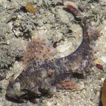
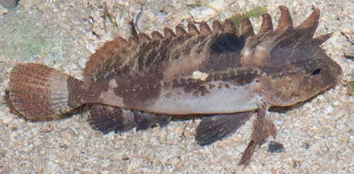
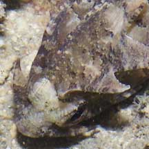
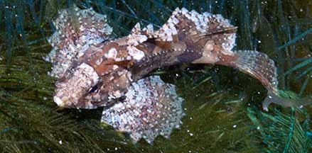

|
|
| fishes text index | photo index |
| Phylum Chordata > Subphylum Vertebrata > fishes > Family Scorpaenidae |
| Longspined
waspfish Paracentropogon longispinis Family Tetrarogidae updated Oct 2020
Where seen? This little waspfish is commonly seen on many of our shores, among coral rubble or seagrasses. But it is small and well camouflaged and thus often overlooked. Now in Family Tetrarogidae (waspfishes), it used to be placed in Family Scorpaenidae (scorpionfishes). Features: 5-7cm long. The dorsal fin begins almost between its eyes and the dorsal fin membranes are deeply incised between the spines. It has a pair of large backward pointing spines above its mouth, which may not be obvious when the spines are folded away. The lateral line has prominent tube-like scales. Some may have a white band across the face, and indeed, they are called Whiteface waspfish in some places. In captivity, they have been observed to change from light to dark colours. Sometimes mistaken for a stonefish (Family Synanceiidae) or the False scorpionfish (Centrogenys vaigiensis), a grouper, which looks very similar. Here's more on how to tell apart fishes that look like stones. |
|
 Chek Jawa, Jun 05 |
 Prominent tube-like scales along the lateral line. Deeply incised membranes between dorsal fin spines Pulau Sekudu, Apr 06 |
 Backward facing spines next to the mouth, First dorsal fin almost between the eyes. |
 Sentosa, Nov 10 |
|
| Human uses: These fishes are sometimes taken for the aquarium trade.. |
| Longspined waspfishes on Singapore shores |
On wildsingapore
flickr
|
| Other sightings on Singapore shores |
Links
|